Short guides, one goal each. Every step has what you do, what you should see, and a screenshot of the real
app, captured automatically on a fictional workspace. The agents' screens are real Claude Code and Codex
screens, recorded once and replayed. For how things work underneath, see the Docs.
Start a Claude Code session in a project, give it a task, and follow it from the list without watching it.
You need
Agent Manager GD installed, with Claude Code or Codex already installed and signed in (Install)
Click + New session at the top of the list (or press Ctrl+Shift+N). Give it a name, pick Claude Code, a group and the project's folder.
The New session dialog. Below the folder, what the session gets: its own git branch, the Second Brain, a journal in the Brain, Remote Control. The defaults are fine to start.
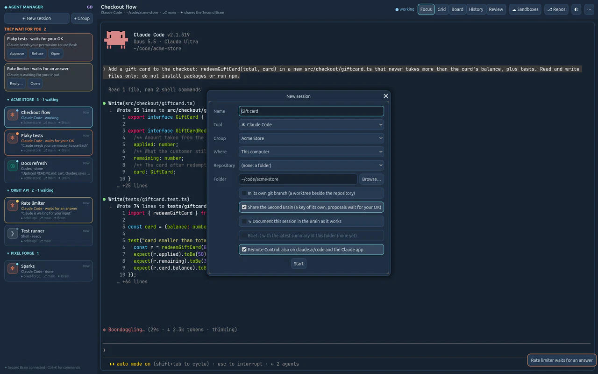
Click Start.
The session opens in Focus view: Claude Code itself, in a real terminal, with your own login and settings. Its card in the list says ready.
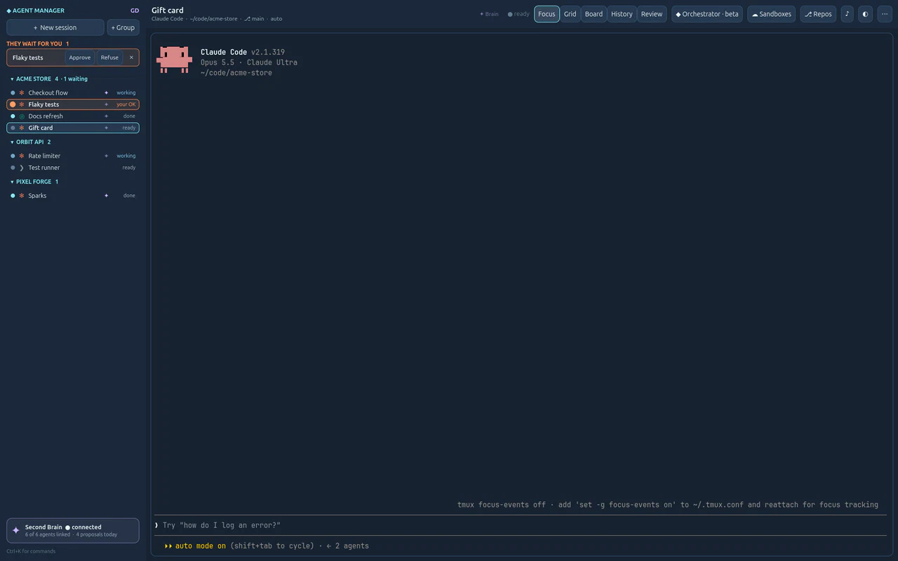
Type what you want in the terminal, as you always do, and press Enter.
Its state turns to working, in the header and on its card. You can leave it: the list keeps telling you where it is.
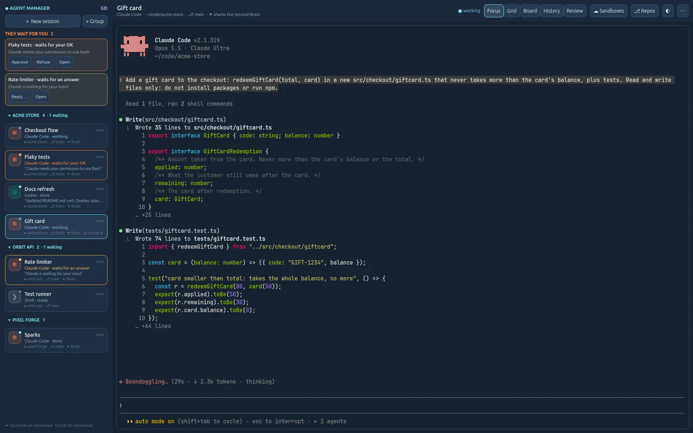
Work on something else, in another session. When an agent needs you, you see it without looking for it.
The card moves up into They wait for you, in orange for an OK, in yellow for a question, with what the agent asks. A toast says it too.
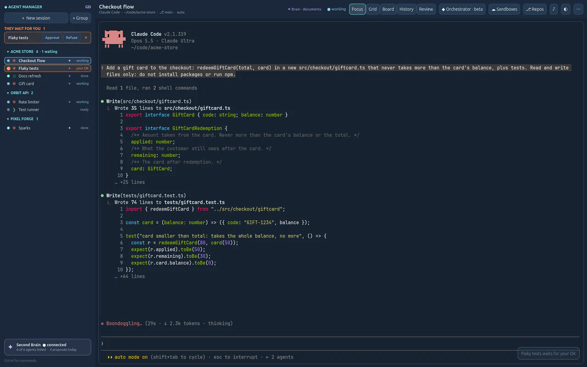
When it is finished, its card says done.
Close the app if you like: the session lives on in its own terminal server. Open the app again and every agent is where you left it.
If it does not work
Claude Code is not found. Open ··· › Setup check: it says what is missing and the command to run yourself (Setup check).
The state stays on ready while the agent works. States come from the agent's own hooks, which Agent Manager installs for that session only. A session started before an update needs Restart.
The text looks wrong in the terminal. That is a bug: tell us. The terminal must be impeccable (accents, colours, emoji, mouse).
See one agent, four at once, or a live tile for every session, and move between them with the keyboard.
Focus (Ctrl+Shift+F): one session, full size.
The terminal takes the whole space; the header says its tool, folder, branch, whether it shares the Second Brain, and its state.
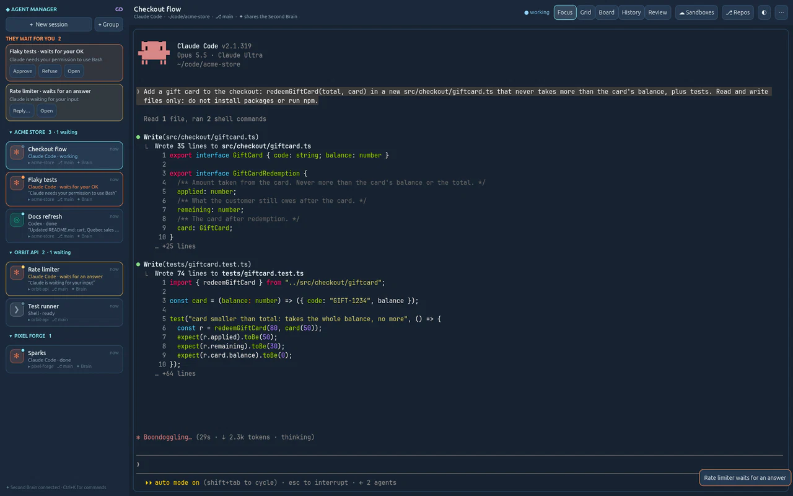
Grid (Ctrl+Shift+G): up to four sessions side by side.
Each terminal is real and live: type in any of them. Its title bar shows its state. Choose which ones from the list.
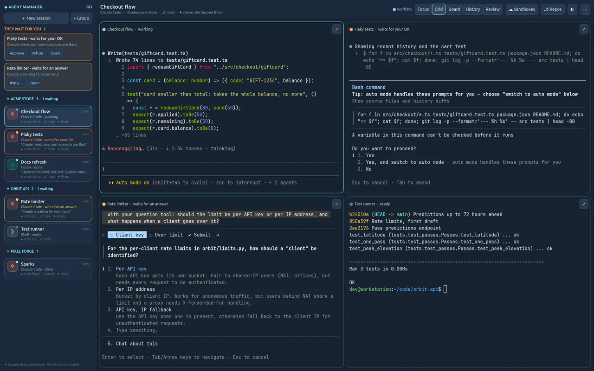
Board (Ctrl+Shift+B): a tile per session.
A live preview of each terminal and its state. Click a tile to open it in Focus.
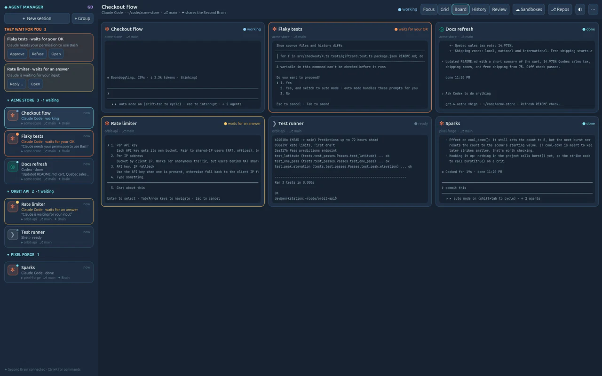
Ctrl+Shift+↓ and Ctrl+Shift+↑ go to the next and the previous session; Ctrl+Shift+K opens the command palette.
Type a few letters of any action or session name: gr finds Grid view and the sessions in a group.
If it does not work
A shortcut does nothing in a terminal. In a terminal, plain Ctrl keys belong to its programs: add Shift. You can change any shortcut in ··· › Shortcuts.
Read what an agent changed, file by file, comment on lines, and send your comments to it in one go.
You need
A session that changed files in a git repository
Select the session and click Review (Ctrl+Shift+R).
The files the agent changed since its branch started, with their added and removed lines, and the diff of the first file.
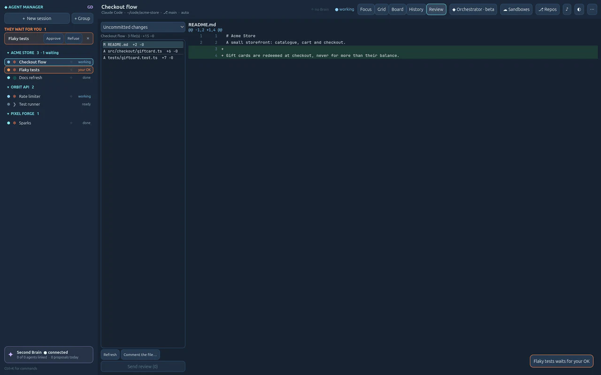
Click a file in the list.
Its diff, line by line, in the terminal's font. New files show whole.
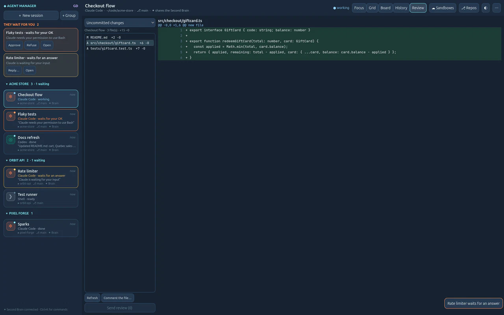
Click a line (or Comment the file…) and write what you think of it.
Your comment sits under the line, with the code it is about. Add as many as you like, on any file.
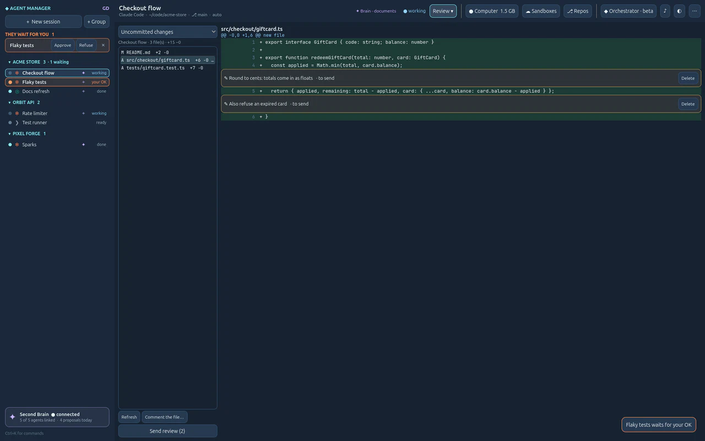
Click Send review.
Every comment goes to the agent at once, each with its file, line and code, as one message in its terminal, and is marked sent to the agent. When the agent has dealt with one, mark it Handled.
If it does not work
Review is empty. The folder is not a git repository, or nothing changed yet. A session in its own branch (worktree) shows only its own changes.
Find an old session in the History, pick up its conversation where it stopped, or try another way on a copy.
Click History (Ctrl+Shift+H).
Every session ever made, the archived ones too, with each conversation the agent had in it. Nothing is forgotten: removing a session keeps its conversations here.
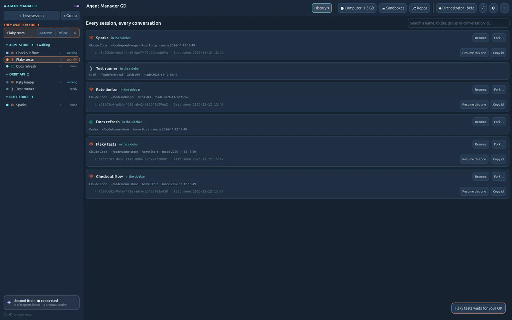
Type in the search box: a name, a folder, a group or a conversation id.
The list narrows as you type. Each session shows its tool, folder and its conversations, newest first.
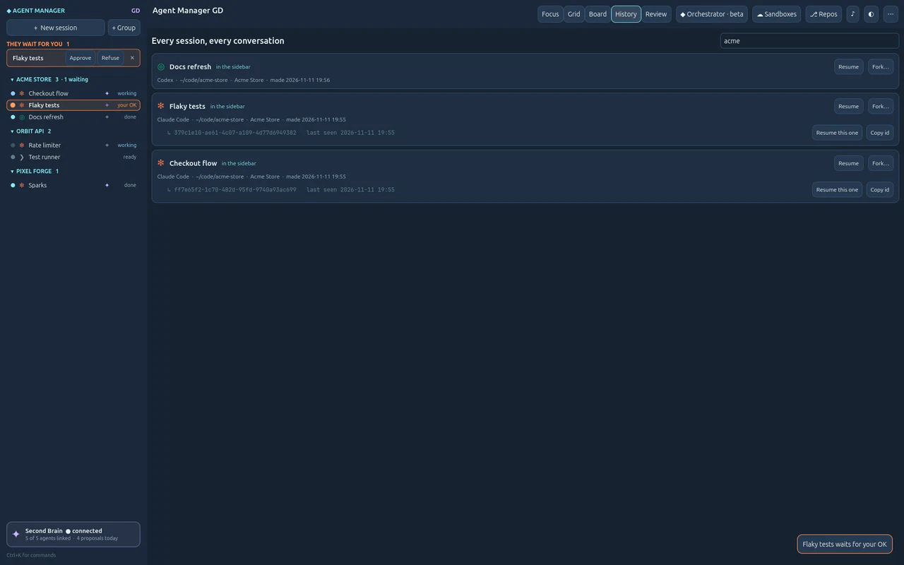
Click Fork… on a Claude Code session and name the copy.
A new session starts on a copy of the conversation: the original stays as it was. Use it to try another approach without losing the first one.
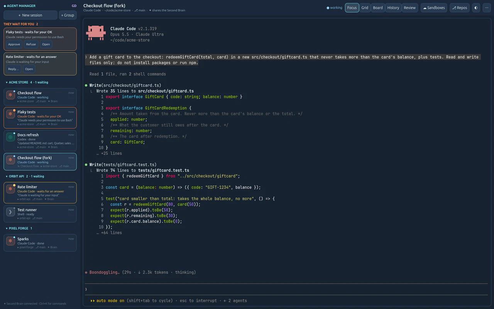
To work without touching the main branch, tick In its own git branch in the New session dialog.
The session gets a worktree beside the repository, on its own branch: its header shows the branch. Review shows only its changes.
If it does not work
Resume starts an empty conversation. The agent did not save that conversation (it ended before its first message). Pick another one under the session: Resume this one.
Give a GitHub repository its own SSH key, made and checked by Agent Manager, so sessions push without your own keys.
You need
A GitHub repository you can administer (to add a deploy key)
Click ⎇ Repos at the top.
Connected repositories, and a form: the repository's SSH address, and whether to use your own clone or let Agent Manager clone it.
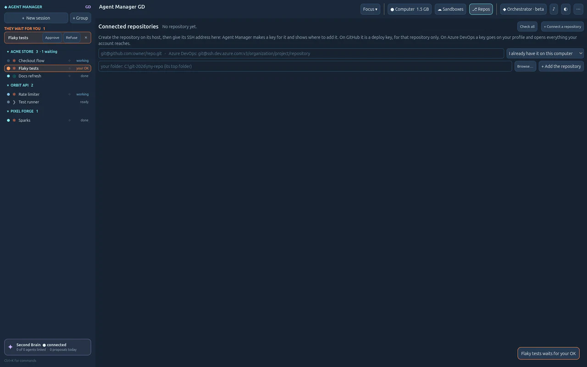
Paste the address (git@github.com:owner/repo.git), choose your folder, and click + Add the repository.
Agent Manager makes a deploy key for this repository alone. Its public half is shown with a button to copy it, and the link to the repository's Deploy keys page on GitHub.
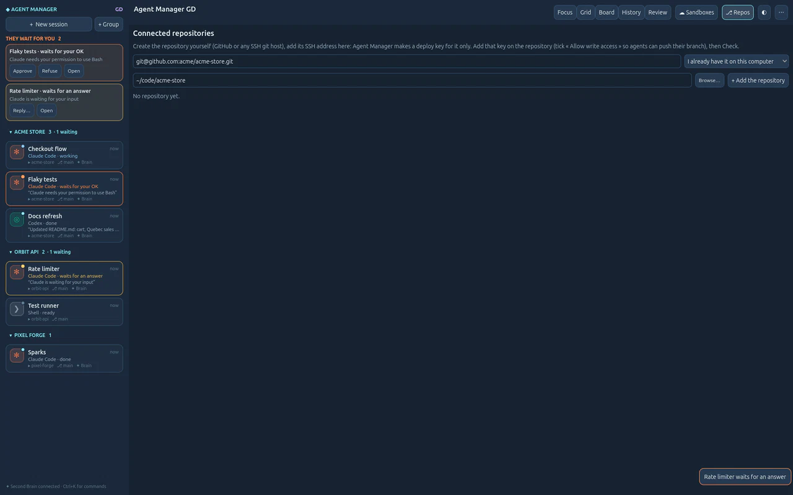
On GitHub, add the key (tick Allow write access if sessions should push), then click Check.
The card says connected and origin ✓: the key reads and writes. It shows the key's fingerprint, the folder, and buttons to copy the key again, rotate it or disconnect.
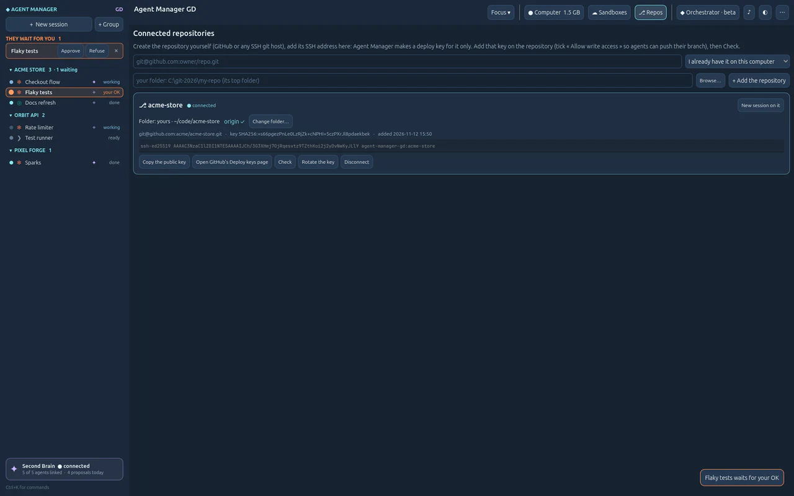
Start a session on it: in New session, pick it under Repository.
The session's git uses this key only, through GIT_SSH_COMMAND. Nothing is written in your ~/.ssh, and the agent is told how git authenticates here.
If it does not work
Check says write is refused. On GitHub, the deploy key needs Allow write access.
ssh -T git@github.com shows another account. That command ignores the session's key. Check with git ls-remote origin instead.
Dictate into a terminal with F8, and drive the app with F9: approve, go to a session, ask who waits.
You need
An OpenAI key in ··· › Keys, for the transcription (Keys)
Open ··· › Keys and paste your OpenAI key.
On Windows it is encrypted for your Windows user (DPAPI); on Linux, the file is readable by you only. It is never shown again, never written to a log. Your Second Brain keys are listed below it.
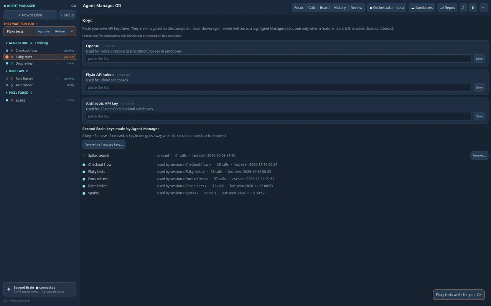
In a session, hold F8 and speak. Release it when you are done.
A listening overlay with a level meter. On release, what you said is written into the terminal, as if you had typed it: read it, then press Enter.
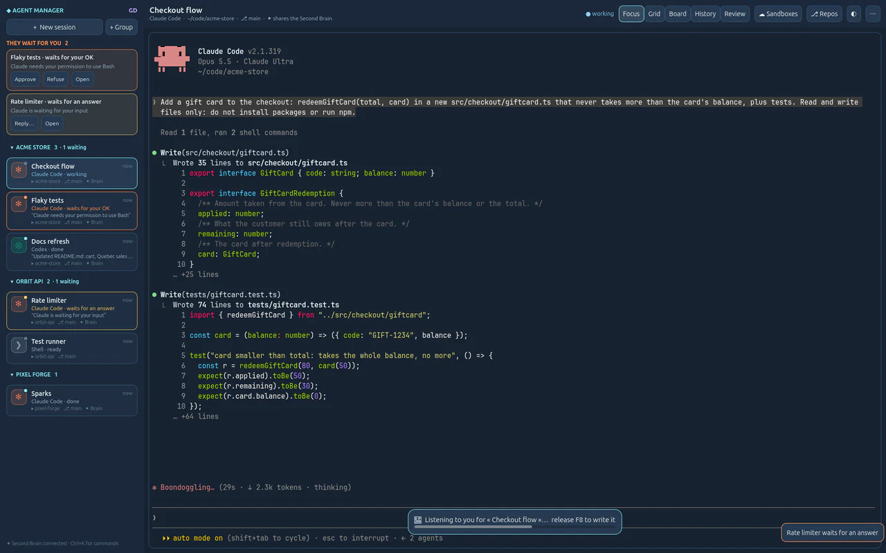
Hold F9 and give a command: approve Flaky tests.
Agent Manager asks before acting, with what it heard: « Approve “Flaky tests”? ». Other commands: go to …, grid view, who is waiting, wrap up …, new session ….
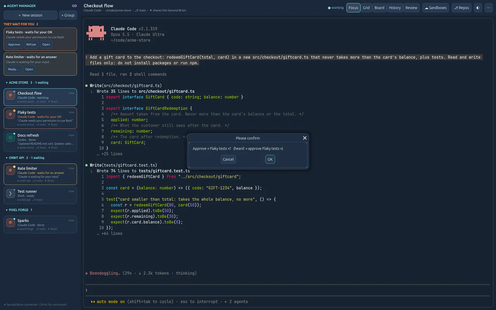
Click OK.
The OK goes to that agent, and it carries on. With Spoken status on, your system's own voice tells you when an agent is done or waits for you, offline.
If it does not work
Nothing is written after F8. Check the key in ··· › Keys, and that the microphone is allowed for Agent Manager. The toast says what went wrong.
F9 typed my words into the terminal. When what you say is not a command, it is dictation: it goes to the active session.
Keep an eye on a Claude Code session, and answer it, from claude.ai/code or the Claude app while you are away.
You need
Claude Code signed in with a Claude account that has Remote Control
In New session, keep Remote Control: also on claude.ai/code and the Claude app ticked (it is on by default for Claude Code).
The session is started with Claude Code's own Remote Control, under the name Group · Session, so you recognise it on the other side.
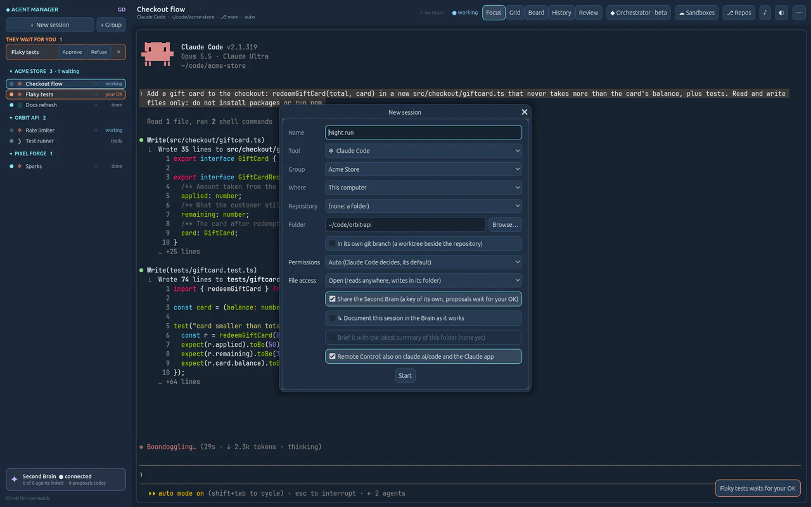
Start it, then open claude.ai/code or the Claude app on your phone.
Its card shows ⇄ claude.ai. The same conversation is there, live: read it, answer it. Back at your desk, the terminal shows what happened.
If it does not work
The session is not on claude.ai. Remote Control is Claude Code's own feature and needs your Claude account to have it. Untick it for sessions that should stay on this computer only.
Start an agent that reads where the project stands in your Second Brain, then proposes your words, its decisions and a journal as it works.
You need
Second Brain GD running on the same computer: the status bar says ✦ Second Brain connected
In New session, keep Share the Second Brain ticked and tick ↳ Document this session in the Brain as it works.
The session gets a Brain key of its own, at the « propose » level: it can read and search, and what it proposes waits for the Brain's archivist.
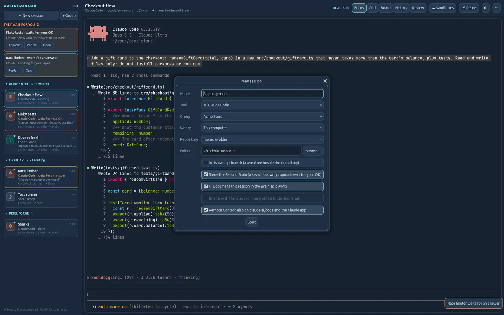
Start it.
Its card shows ✦ Brain and its header shares the Second Brain. Before changing anything, the agent reads the project card, the last journal and the open questions, and checks them against git log.
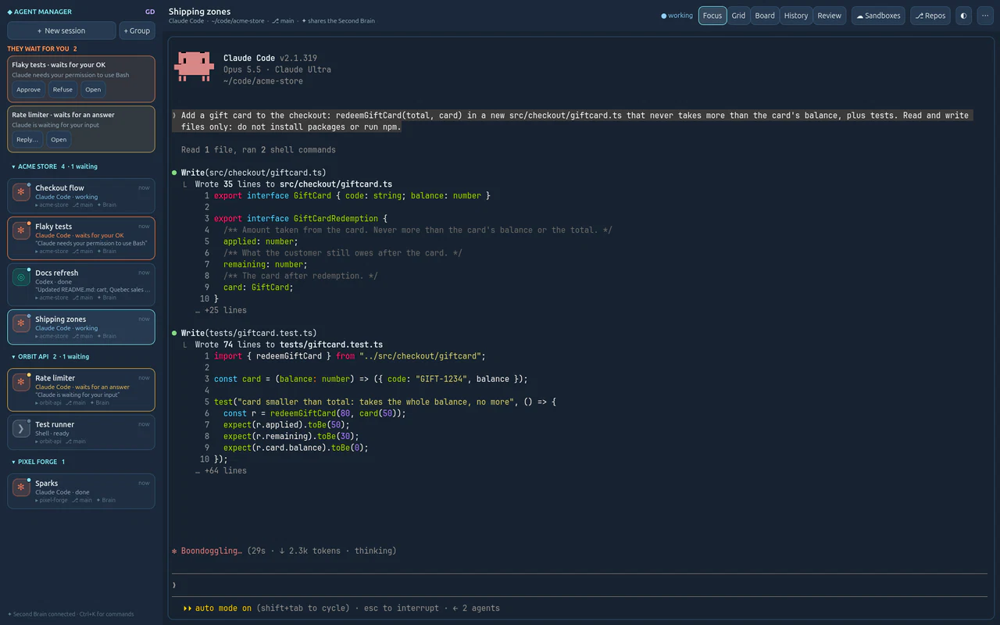
Open ··· › Keys.
Under Second Brain keys made by Agent Manager, one key per session, with its calls. A key nothing uses any more can be revoked; removing a session revokes its key.
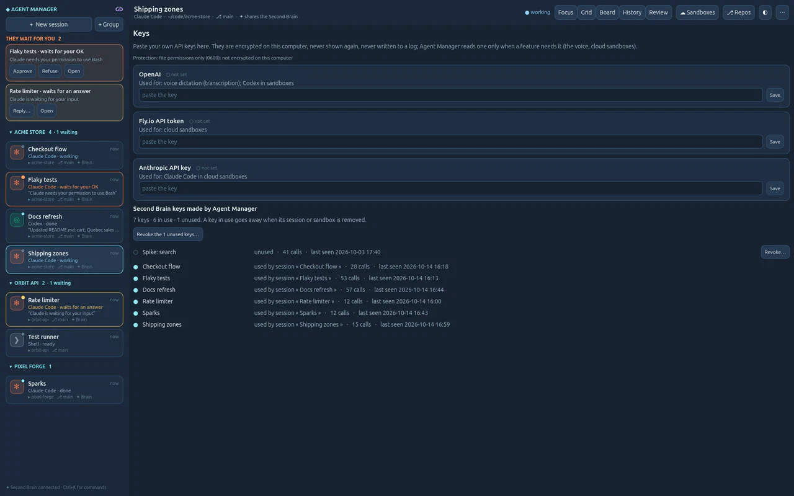
In your Second Brain, open AI tools and your Brain.
What sessions proposed: your directives, their decisions, a journal at each commit, each with who proposed it and why. Approve, reject, or let the archivist file them with your rules.
If it does not work
The Brain options are greyed out. Second Brain is not running, or not found: the status bar says why.
Document is greyed out. Claude Code only for now, on this computer.
Give an agent a throw-away machine on Fly.io, see what it costs as it runs, and keep a budget that only pauses.
You need
A Fly.io account and its API token in ··· › Keys
An Anthropic API key (Claude Code) or OpenAI key (Codex) in Keys, for the agent in the cloud
Open ☁ Sandboxes.
Three steps: the image (what it holds: Ubuntu, tmux, git, Claude Code, Codex), deploy with an estimate first, and this month's costs against your budget. Below, a live card per sandbox: the machine, the SSH tunnel and its latency, the branch, files not committed, commits not pushed, and what it cost today.
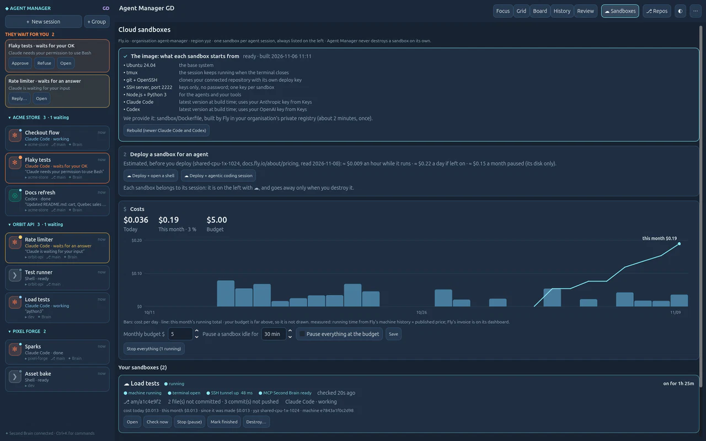
Click Deploy + agentic coding session, or pick ☁ A cloud sandbox under Where in New session.
The same dialog as for this computer. The machine starts in about 30 seconds; the session's terminal is the agent's terminal in the cloud, through an SSH tunnel. It reaches your Second Brain through that tunnel, with a key of its own.
If it does not work
Deploy is refused. The month's budget is reached: raise it, or wait. Budgets and caps only pause machines, never destroy them.
Costs differ from Fly's invoice. Agent Manager measures running time from Fly's machine history × the published price. The invoice stays on Fly's dashboard.